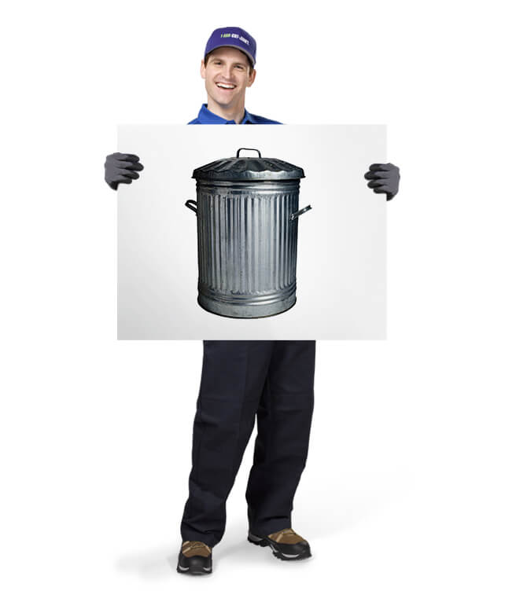

10.25 Midterm Reflections
Q - What do you get when you open up a can of worms?
A - An even larger can of worms.
Caution - you are currently 28 words into a 2661 word reflection. Please ensure you are adequately hydrated before you embark on this journey. To break down the monotony, I’ve included
a picture of something nice between each section. Safe journeys, brave reader.
While the feedback from the midterm crit was val uable, the feedback from the rest of the class was invaluable. What I mean by this is that, all at once, a survey was conducted and the
collective responses seem to suggest something overlooked.
Before we get into this, I would like to briefly discuss the structure for evaluating the feedback. I created four categorical “buckets” - Questions, Critiques, Insights, and References,
and I went ahead and took important points from each colleague, and sorted them into the appropriate categories. The discovery from this exercise was telling of the overall perception
of the research posed. Most of the feedback shared was around questions and critiques, then fo llowed by insights, and finally references. While all of the questions raised and all of the
critiques formed were constructive, the quantity and shared nature of them suggest an underlying issue that still hasn’t been addressed.
One more thing before we begin. It turns out the colors I picked for my presentation were unusually jarring. Three or four people brought this up in their feedback. The slides
found under ‘10.18 Midterm Presentation’ have been updated since to remove the pink-toned background

Questions
The two types of questions gathered in this section consist of questions about the project and questions for the project. Questions about the project can be condensed into the following
overarching questions:
- What am I trying to convey in terms of the relationship between people and objects?
- What objects am I looking at?
- What role does memory play in the relationship between people and objects?
- How do aspects of this research address shared objects and communal worth?
From these questions, I can tell I wasn’t completely clear about the relationship between agency and objects. While this will be addressed later, it’s worth noting at this time that
‘agency’ is perhaps not the most appropriate term for describing an object’s worth. I will continue to use it for now to prevent confusion in terminology. Perhaps it’s worthwhile to
look again at the what’s and why’ s - what am I trying to achieve here, and why am I trying to achieve it? Another catching point is the choice to pursue the research question in terms
of discarded and undesirable objects. I noticed in other projects a more gradual and reasoned path towards the research question, but for me, the inclination towards the discarded was
abrupt and felt disconnected from where the research was taking me. With this, I must ask myself, where is the research taking me? This question is important to understand, but I also
need to understand how there’s no singl e path to the research question.
There were more than a handful of questions that might prove helpful for the project. Some of the more poignant questions are centered around our relationship with objects, and how we
receive them. A question asked, what about people who feel no connection to objects, whose relationship isn’t of high importance. Another question wondered how memory plays into the
‘agency’ of an object, and if the thought of an object is enough to render it concrete. Further out, someone questions whether it’s possible to regain a sense of personal significance
or meaning in existing or discarded objects without having to create a new object by way of transforming it. In addition, what does the maintenance of an object versus the replacement
of one say about consumption.
For many of these questions, I don’t currently have answers to, but will form the backbone of the conceptualization process as we head into refining (redefining?) and prototyping.

Critiques
This category of feedback, along with the questions above, form the bulk of influence on how to move forward. In general, the critiques were more than expected, but this knowledge is
crucial in understanding the pain points and shortcomings of the research question and its explorations. To summarize the critiques into two broad concerns:
- Terminology and definition - the judgements presented are not representative of all people and don't consider cases where the opposite might also be true.
- Intent and Goal - who is the audience, what am I trying to achieve, why am I doing this, and what should users take away from this interaction?
This category of feedback, along with the questions above, form the bulk of influence on how to move forward. In general, the critiques were more than expected, but this knowledge is
crucial in understanding the pain points and shortcomings of the research question and its explorations. To summarize the critiques into two broad concerns:
Termonilogy and Definition
The critiques within this section deal with verbiage, categorization, meaning, and the relationships between these ideas. One such comment, shared by many, is how ‘undesirable’ and
‘discarded’ objects are more subjective than not. The meaning of these objects could change depending on context and time. While the meaning of an object might change, it is no less
significant when it becomes trash.
When building up the argument around value, significance, and meaning, I was aware that not all objects can be sorted cleanly into each. In fact, it could be argued that all objects
carry some degree of each, and will continue to do so through the rest of time if interpreting this from a future archaeologist’s point of view. This was something I struggled with when
it came to narrowing down my focus. After this presentation, I’m still left wondering, which objects can I focus on, and what makes these objects so much different than others? If it’s
not through virtue of utility versus artifact, or value, significance, and meaning, then through what lens should it be? Perhaps the biggest question of them all, can something be truly
undesirable? If so, what are they?
One really interesting point brought up was the idea of handmade versus mass manufacturing. What role does origin play in an object’s worth? Some references below present artists and
thinkers who deal with this question.
Intent and Goal
Honestly speaking, the audience is something I haven’t considered yet. This is surprising and shocking at the same time as this has come up in previous discussions, and the core of the
project is about the relationship between a person and an object. I believe understanding who the audience is, as well as understanding what the object is, will be the crucial step forward.
The other aspect of the critiques received is my intent for pursuing this research question. One person wondered about the need to, “clarify which aspect you want to focus on and which
kinds of relationships you want to emphasize for your final project.” What are some of my specific outcomes? How should people feel after this interaction? Or even, how should the object
feel? What will the object be after the same interaction? What is learned? Surely these questions should be written on a giant, neon colored Post-It and stuck on my laptop screen.

Insights
The items that fall into this category are suggestions are general thoughts that have come up in the audience’s mind. While the questions and critiques above form the critical backbone
of the research, insights (as well as references) serve as the content pushed forward. These insights carry bits of anecdote and lived experiences.
One such insight mused about a spiritual aspect to the work. In ways similar to the Shinto religion, or the Voodoo and Santoria, are we a part of an object as much as it’s a part of us?
In this line of thinking, the relationship between someone and an object is never severed, even when the object is deemed ‘undesirable’ and discarded.
Another insight thinks about the loss of ‘agency’ in more objective terms. A child loses a toy, a forceful eviction, or having to get rid of things before and after a move. A useful
exercise would be to identify how certain objects lost their ‘agency.’ This can become a paradox of sorts. From what I’m trying to define, an object without ‘agency’ is an object without
sway over discourse within our lives. By identifying objects that have lost their ‘agency’ would instill ‘agency’ in them once more.
A very interesting approach and way of considering objects is by understanding them as objects, as presented by one of my colleagues. “The visual language helps us orient ourselves to
space”. By understanding objects as part of a communicative device suggests all objects in a space have some sort of connection between them. How objects are displayed, where they’re
displayed, and how many of them there are, all build up a larger context some of us might be able to comprehend.

References
There were quite a few good references included in the feedback, which ranged from people to interview, artists’s take on objects, and general practiced concepts. I’m drawn to the
perspectives of artists and how they interpret objects to imbue meaning. In particular, Duchamp and Warhol both worked with what Duchamp defined as ‘Readymades,’ objects that have no
inherent meaning, but are given such when presented within another context.
On the other hand , I’m interested in doubling down on undesirable objects - trash, discarded, disposed, etc. Some of the feedback suggested going further into trash and sustainability
practices. How are these tied into our everyday lives, and what is our relationship to these practices?
Konmari, the Japanese organization consultant was also brought up. I don’t know much about her, but I understand her intention of creating a dialogue between objects and ourselves. In
understanding our objects, we understand ourselves a little better. Loose thought - this can be considered a spiritual direction for the project. Is this the relationship I’d like to
introduce?

External Crits
Both Richard and Mark brought up points that complimented different ends of the presentation. Most of the feedback was based on references, but Mark did provide me with a critical
suggestion - take the presentation along with all the material supporting it and write out a project statement. Then write out a different project statement. Repeat for a few more times,
and then evaluate the similarities and the differences between them. With the similarities, those ideas serve as the research base, and with the differences, means of communicating that
research. This process would greatly benefit the research question by giving it a full breadth of exploration, but with a focused avenue of questioning.
Mark also gave life to objects with utility, as defined in the presentation. Ad-hoc could be this possible approach in which objects are given new life based on their perceived strengths
in an ensemble. Objects, in this scenario, are oftentimes used in ways unintended, and by doing so, new meanings and utility emerge.
Richard spoke towards the ‘artifactual’ side of the presentation and referenced a few exhibitions and art pieces that rely on taking found objects and introducing meaning, rather than
utility. One of these references, “Living With Help,” featured objects that were incomplete in their functioning. Their functions are only fully realized when assisted by humans.
The example Richard gave was of a lamp that required someone to hold it in order for it to function as a hanging pendant lamp. As a design, this object doesn’t address utility, but
rather meaning and the relationship between user and object.
I find this relationship described above central to what I’d like to focus on for the project, and will explore further (once I’m able to get the name of the artist from Richard).

Moving Forward
I’ll treat this final section of the reflection as a laundry list of things needed to push forward the project.
What to Clarify
Really consider the words used and ensure their usage is well defined each time they come up. Understand the scenarios which exist outside of these definitions and understand why they
exist where they do and what that says about the presented definition? Think about the relationships between these definitions as well. Critically, rethink ‘agency’ and reimagine this
“””””aura””””” an object has. What could this descriptive word be? Is discarded or undesirable the correct descriptor?
Consider the audience, and what am I trying to convey with this project. What feelings do I want to bring out? What would I want for others to remember?
Which objects am I focusing on? Why am I drawn to discarded objects? How did I arrive there? What makes something truly undesirable? Would it be possible to provide examples? Take note
of the gradual buildup to the topic of focus in other presentations in the class. How does their research lend to their end goal as opposed to this project? While these do not need to be
the same, they need to be clear.
Questions to Pursue
- What is the difference between handmade and mass produced? Does an object’s origin play a role in the object’s destination?
- How can spiritualism play a part in defining the objects we surround ourselves with? What is spiritualism in terms of objects? Is it belief that something greater exists within the object, or that simply the object becomes something greater once it’s engaged in dialogue with the user/owner/audience? How does this relationship develop, why does it sustain, and for how long is it sustained for?
- How can objects be understood as a visual language? By understanding objects as part of a communicative device, does this suggest all objects in a space have some sort of connection between them?
- How do we take into account memory when dealing with objects? Does an object need to be physically present for it to have ‘agency?’ What about objects what are no longer around, but we think back upon on a constant basis?
- Is it possible to regain a sense of personal significance or meaning in existing or discarded objects without having to create a new object out of it?
- What makes an object trash and how could you change people’s perception of it?
- What does maintenance of an object versus the replacement of an object say about consumption?
- How do we interact with damaged objects? How can we relate human prosthetics to damaged objects?
References to Pursue
- Konmari
- Museum of Broken Relationships
- Toy Story
- Shannon Mattern
- Investigate current trash and sustainability practi ces
- Marcel Duchamp Readymades
- Andy Warhol Daily Boxes
- Ad-Hocism 70s book
- Jeff Koons Kitsch
- One Man’s Treasure MoMA
- MoMA PS1 Japanese artist collects debris - MoMA Greater New York Show
- Living With Things - Monika Hoinkis
- Kintsugi
- Objects on "life support”
- Prosthetics
- Broken items
- Repairing items
- Ikeahacks
- Life support machines
- Museum artifact display armatures

What to Prototype
Objects with life - display objects in different positions in the air. This recontextualizes undesirable objects in a manner that’s not seen from day to day. Refer to museum displays,
particularly around relics.
Objects in mid air, in a trash can - find a trashcan in the city and take photos from all sides. Select a few objects from the bin, and remember its position within the trash heap.
Reconstruct an abstract outline of the trash bin and carefully orient the objects in mid-air, and in the positions and locations in which they were found, within the abstracted trash can.
Refer to Cornelia Parker’s 30 pieces of silver.
Last photo taken - capture an object right before it hits the ground. This helps us appreciate the object in a form that’s no longer around. We see the object right before the final
transformation. Refere to Ai Wei Wei’s vase shattering.
Object prosthetics - inventive ways to hold a broken object back together. Could possibly go hand in hand with the above prototype? Might the object be on life support? Excessive
framework piecing it back together. The opposite of presenting an object at a museum, object is barely visible.
Trash still life - superniceandluxuriousphotoofundesirableobjects. Reference Vermeer??? Still life with trash! Can play with lighting to understand how it affects mood.
What can be a prototype around the tactileness of an object?
Can you “listen” to an object?
Can you write about an object? Can this have some ML component?